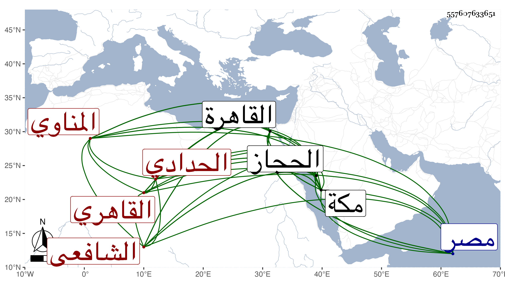

0902Sakhawi.DawLamic.ITO20230111-ara1.EIS1600.557607633651
Biography ID: 557607633651
1033
يحيى بن محمد بن محمد بن محمد بن أحمد بن مخلوف بن عبد السلام الشرف أبو زكريا بن سعد الدين بن القطب بن الجمال بن الشهاب بن الزين الحدادي الأصل المناوي القاهري الشافعي والد زين العابدين محمد ويعرف بالمناوي . ولد في العشر الأول من ذي الحجة سنة ثمان وتسعين وسبعمائة كما أخبرني به زاد كما قرأته بخطه ظنا ، ونشأ بالقاهرة فحفظ القرآن وصلى به والعمدة والتنبيه والملحة وألفيتي الحديث والنحو وكذا المنهاج الأصلي ظنا وتفقه بالشمسين البرماوي والغراقي والمجد البرماوي والولي العراقي ولازمه كثيرا فيه وفي الأصلين والعربية والحديث وغيرها لكونه كان زوج أخته بحيث كان جل انتفاعه به وسمع عليه الكثير حتى ببعض الضواحي بل في بعض مناهل الحجاز واستملى عليه بالقاهرة بعد الزين عبد الرحيم الهيثمي وقرأ عليه بمكة أحد المجلسين اللذين أملاهما بها وكذا أخذ النحو أيضا عن الشطنوفي والفرائض والحساب والعروض والقوافي عن ناصر الدين البارنباري والحساب خاصة عن العماد بن شرف وأخذ عن ابن الهمام في آخرين وجد حتى أذن له غير واحد في الإقراء والإفتاء وتسلك بإبراهيم الأدكاوي والسيد الطباطبي وجالس الزين الخوافي وغيره ونظر في كلام القوم فتبحر فيه واختلى مرارا وتصدى للتسليك في حياة السيد وغيره من شيوخه ، وحج مع والده ثم مع شيخه الولي وسمع هناك على ابن سلامة وكذا أخذ عن ابن الجزري وغيره بل سمع في القاهرة على الشرف بن الكويك والجمالين عبد الله الحنبلي وابن فضل الله والشمسين الشامي وابن قاسم السيوطي والزينين ابن النقاش والقمني والشهب الواسطي والكلوتاتي وشيخنا والنور الفوى والكمال بن خير والبدر حسين البوصيري ولكنه لم يكثر إلا عن شيخه الولي وأجاز له العز بن جماعة والصدر السويفي والفخر الدنديلي والبدر الدماميني والشموس البوصيري والبيجوري والبنهاوي وابن البيطار وابن الزراتيتي وأبو عبد الله حفيد ابن مرزوق وكتب على الزين بن الصائغ ولكنه لم يمعن فيها بل لزم الاشتغال والمطالعة والعبادة حتى تقدم في العلم والعمل واشتهر بإجادة الفقه وصار له سجية فعكف الناس عليه للقراءة وانتصب لذلك فأخذ عنه الفقه مع الأصلين والعربية والتفسير والحديث والتصوف وغير ذلك ، ولكن فنه الذي طار اسمه به الفقه وصار يقسم في كل سنة كتابا ، ولما مات القاياتي حلق بالأزهر وهرع الفضلاء للأخذ عنه فذكر وراج أمره وقصد بالفتاوى في النوازل ونحوها ونوه شيخه ابن الهمام بذكره عند الظاهر وغيره بحيث قرره في تدريس الشافعي والنظر عليه ثم في القضاء بالديار المصرية وحمدت مباشرته فيهما دروسا وسيرة بالنسبة لعدم اعتماد حكم باطل وتعاطى رشوة ، واشتهر اسمه وبعد صيته وتزاحم الناس عنده بل رحل إليه وكثرت تلامذته والمتصدر منهم في حياته وأخذ الناس عنه طبقة بعد طبقة بل ربما أخذ عنه طبقة ثالثة ، وحدث بغالب مروياته سمع منه الفضلاء وكنت ممن قرأ عليه الكثير وأخذ عنه الفقه تقسيما وغيره وخرجت له أربعين وفهرستا وكذا خرج له الزين رضوان شيئا بل سمع مني تصنيفي القول البديع وما كان يقدم على أحدا وبالغ في الثناء لفظا وخطا كما بينته مع بسط ترجمته في ذيل القضاة والمعجم والوفيات وكان يميل إلى تكميل نفسه بحيث يكثر المراجعة والتحقيق من خواص أحبابه ، وبالجملة فكان من محاسن الدهر دينا وصلاحا وتعبدا واقتفاء للسنة وتواضعا وكرما وبذلا وتوددا وحالا وقالا مع الشهامة والتوجه للفقراء والرغبة في البذل لهم وللطلبة فوق طاقته بحيث يستدين لذلك ويتصدق بعمامته التي يكون جالسا بها وبثوبه ونحو ذلك مما شاهدت الكثير منه ومزيد السماح وكونه بحسب القرائن لا وقع للدنيا عنده بحيث لم يكن يتعاطاها بيده والخبرة بالأمور الدنيوية والأخروية والفحولة وحسن العقيدة بحيث كتب خطه في واقعة ابن عربي وتبرأ من كتبه ومطالعتها ونعم الصنيع ، وحسن العشرة والمداعبة واللطف والمحاسن التي قل أن رأيتها بعده في غيره ولشيخه ابن الهمام أبيات في مدحه وكذا لغيره من فحول الشعراء فيه القصائد الطنانة كالنواجي ، وله تصانيف ونظم ونثر وفوائد ولم يعدم مع أوصافه الجليلة وخصاله الجميلة من طاعن في علاه ظاعن عن حماه وهو يكابد ويناهد سيما بعد موت الظاهر مع كونه ممن بالغ في الوصية به مع ولده المنصور ، وامتحن مرارا أشقها عليه في آخر عمره حين صرف بالصلاح المكيني مع كونه ممن لم يكن يرفع له رأسا فما احتمل ولكنه لم ينقطع سوى يومين وكان فيهما متماسكا جدا بحيث أنه إذا عاده من العادة جارية بالقيام له يقوم . ومات بداره التي جددها ووسعها من سويقة الصاحب في ليلة الاثنين ثاني عشر جمادى الثانية سنة إحدى وسبعين وصلي عليه من الغد في سبيل المؤمني بحضرة السلطان في مشهد حافل لم يعهد بعد مشهد شيخنا مثله ودفن بتربته جوار ضريح الشافعي ورثاه الشمس الجوجري وغيره وأثنى الناس عليه حتى من كان يكرهه وتأسفوا على فقده خصوصا الخيار حتى أن إمام الكاملية مكث أياما لا يأكل إلا قليلا توجعا وتحزنا وجاء العلم بذلك وأنا بمكة فارتجت وصلوا عليه صلاة الغائب ، ولم يخلف بعده في الإقبال على المذهب غيره مع بديع أوصافه وعظيم إنصافه واعترافه رحمه الله وإيانا وأعاد علينا من بركاته ، ومما قاله بأخرة :
| إلى الله أشكو محنة أشغلت بالي | فمن هو لها ربع اصطباري غدا بالي |
| ومالي مأمول سوى سيد الورى | فإني بذاك الجاه علقت آمالي |
إلى أن قال :
| أيا سيدا لا زال طول حياته | إذا سألوه لا يرد لتسآلي |
| لقد ضاق ذرعي من أمور كثيرة | وأنت ملاذي في تغير أحوالي |
| وإن كنت يا مولاي عبدا مقصرا | فحلمك يا مولاي أعلى وأولى لي |
ومع مزيد قيامه مع البقاعي في كائنة أبي العباس بحيث قال مما لا أستبعده أنه ساعده فيها بخمسين دينارا ومبادرته للكتابة على بعض مما صدر عنه بحيث انكف من كان له غرض في الانتقام منه قال كما قرأته بخطه أنه كان يحب منصب القضاء محبة شديدة ، واعتمده غيره في هذا مع أنه قال لي والله لو استقبلت من أمري ما استدبرت ما طرقت لهم عتبة ولكنه كما قيل وجدت أكره الناس في الدخول لهذا الشأن أحرصهم على الوقوع فيه والأعمال بالنيات .
